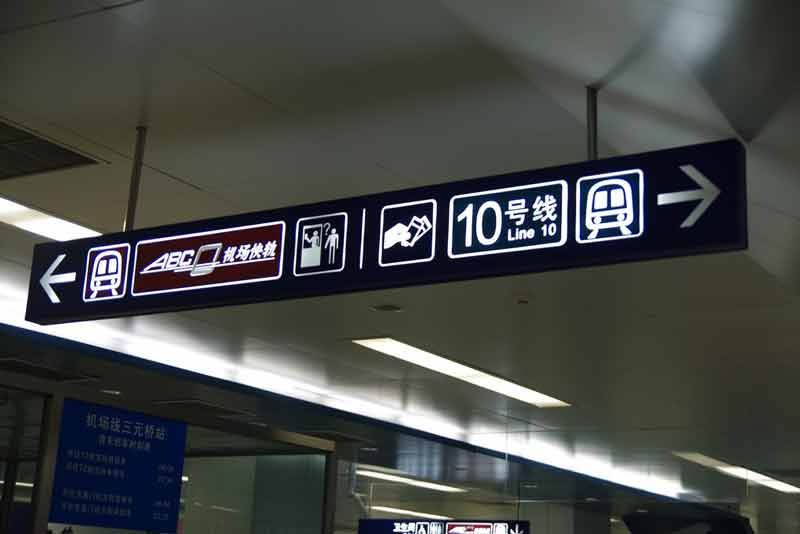
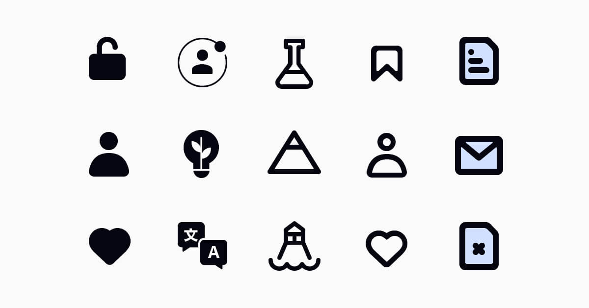
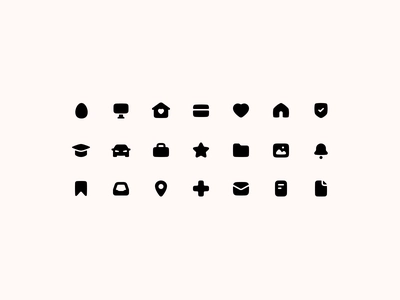
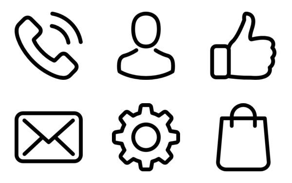
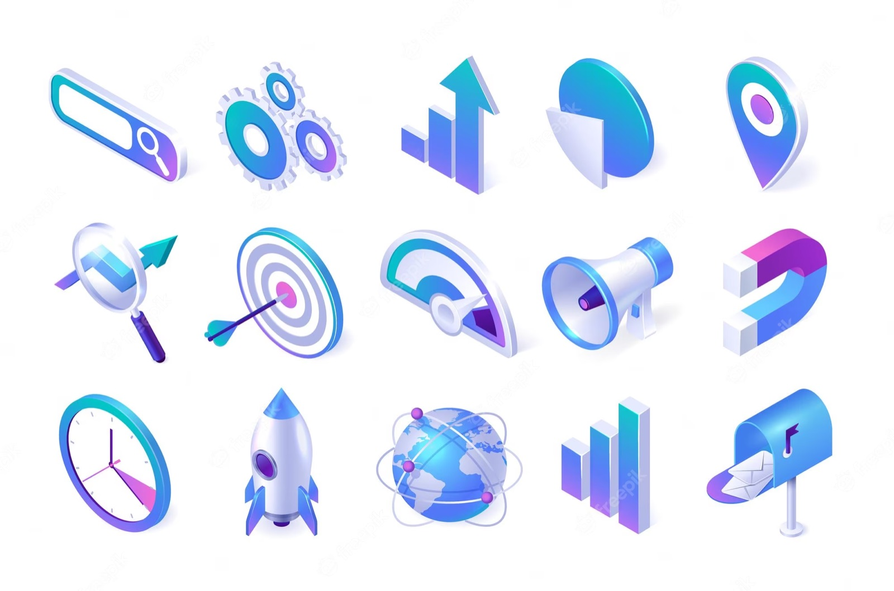
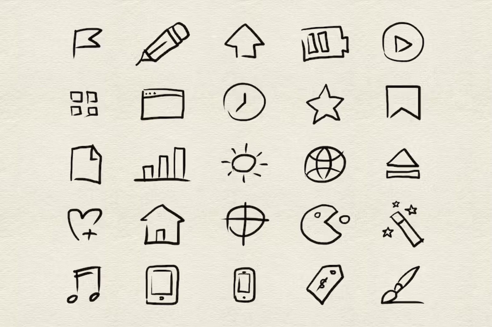
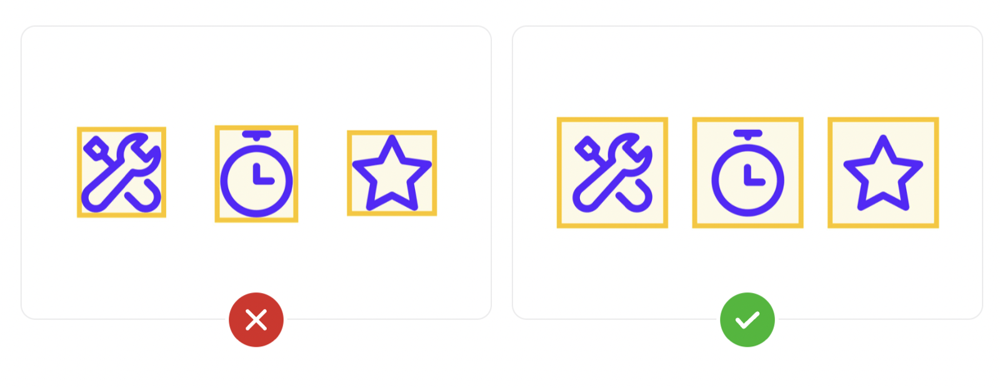
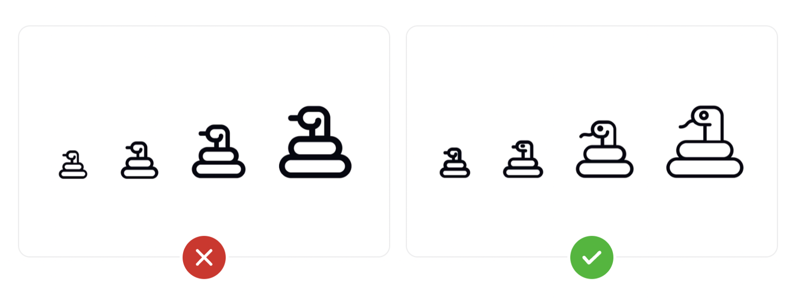
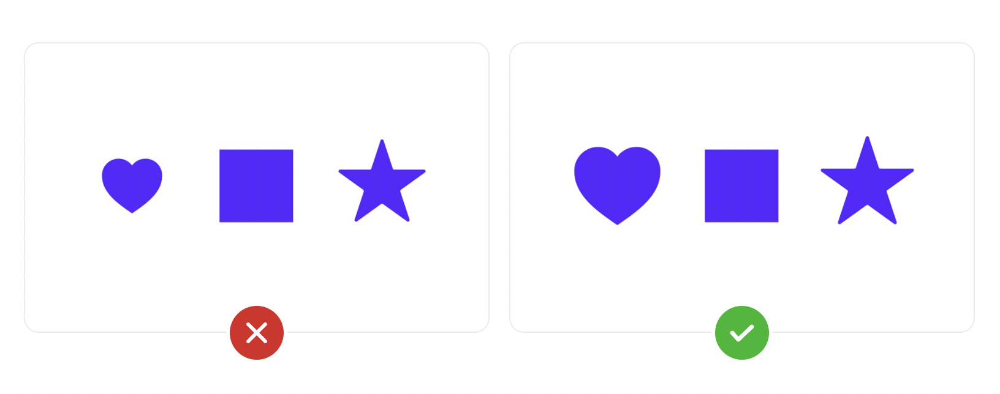
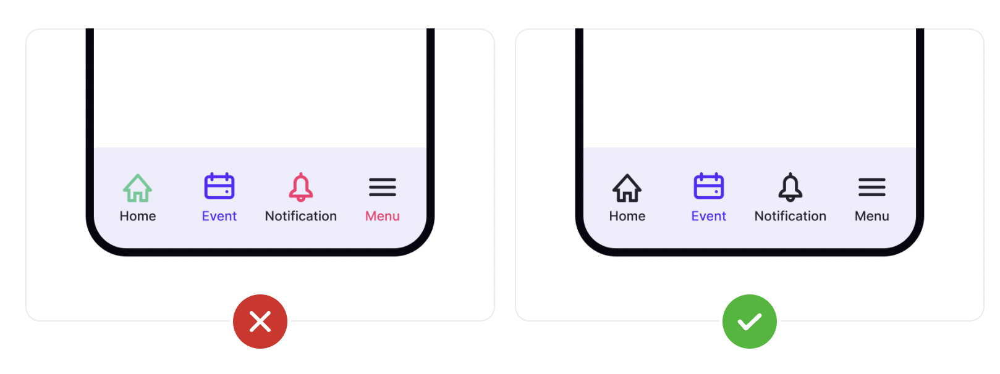

On this page
- Cultural Universality
- Icon Types
- Filled Icons
- Outlined Icons
- 3D Icons
- Hand-drawn Icons
- Tips on using icons
- Icon purposes
- Provide icon labels
- Use consistent icon geometry
- Make icons simple
- Provide consistent containers
- Provide an accessible touch target to icons
- Ensure your icons scale correctly
- Provide balanced icon sizing
- Use consistent colours for your icons
- Why it matters for UX
- Try it: an icon audit (25 minutes)
- Media
- Resources
- Key takeaways
So, let’s talk icons! Icons can dramatically enhance the usability of your interface by giving users immediate visual cues, while also enhancing the aesthetic appeal of your design. Naturally, they are vital to creating user-friendly designs.
Icons are especially useful on mobile apps, where screen real estate is at a premium. But even on websites and desktop apps, icons can be more immediately recognizable to users than text-based interface elements.
Cultural Universality
A great benefit about icons is how they can potentially convey the same meaning across various countries and cultures. For instance, check out these popular icons below. See how many you can recognize!

Icon Types

There are various styles of icons that can be used to convey different visual aesthetics or design preferences. Here are some common icon styles:
Filled Icons
These icons have solid shapes or elements that are filled with color. They provide a more substantial and bold appearance, with no visible outlines or strokes.

Outlined Icons

Outlined icons consist of thin lines or strokes that form the shape of the icon. The interior of the shape is typically transparent or unfilled, resulting in a minimalistic and lightweight look.
3D Icons

3D icons mimic real-world objects and materials, incorporating textures, shadows, and gradients to create a sense of realism. They aim to replicate the look and feel of physical objects within a digital interface.
Hand-drawn Icons

Hand-drawn icons have a more organic and imperfect appearance, as if they were sketched or doodled by hand. They often convey a sense of creativity, personal touch, or informality.
Tips on using icons
Icon purposes
Every icon in your design should serve a single purpose. Avoid using the same icon to mean different things, or using different icons to mean the same thing. That just confuses your users. For example, if you use a shopping cart icon in your header, don’t use a shopping bag elsewhere in your design.
Provide icon labels
When using icons that are not universally recognizable, icon labels minimize ambiguity. Don’t assume that all users will immediately understand the purpose of an icon. When in doubt, include a label.
Labels should be short (1-3 words are usually best) and provide clear meaning to the icon. Action words are often best, telling the user what will happen when they interact with the icon (such as "search" or "add").
Use consistent icon geometry
One of the most important things to remember is to maintain consistent geometry in the style of your icons. For example, if some of your icons have crisp, sharp corners, then all of your other icons should too.
Use rounded icons with rounded icons, and take every icon from the same family.
Make icons simple
Keep your icons as simple as possible while conveying what you want them to convey. Think twice before adding details. Simplicity is almost always the better option. This is particularly applicable when your icons are small.
Provide consistent containers
Not all icons are created equal, so it’s important to wrap containers around them for consistency. Add a little container padding around each icon, too, to leave room for it to breathe within your design. These containers aren’t visible to users, but they’re invaluable in helping you align your icons.

Provide an accessible touch target to icons
Touch targets are arguably some of the most important spacing elements in an interface. When a user has to try to tap multiple times on a button to get it to work, it’s frustrating and may cause some users to simply assume your UI is broken. When tappable elements are grouped too closely together, this amplifies the problem.
Touch target is the on-screen area that responds to user interaction. In general, they should extend beyond the visual boundaries of the element being tapped, as it enhances both usability and accessibility for users with certain physical impairments. Material Design guidelines recommend a touch target size of at least 48x48px, while iOS guidelines specify a slightly smaller minimum of 44x44px.
Ensure your icons scale correctly
Not all icons are the same size. That’s why it’s important to keep icon scaling in mind when designing your icon set. Smaller size icons fit fewer details while larger icons can include more detail.
Design your icons in multiple sizes whenever possible, with each slightly more detailed than the previous one. Smaller icons can also be wrapped in larger containers to give them more visual weight without increasing their size.
No time to design more icons? No problem. You can always wrap smaller icons in larger containers to increase their visual weight without increasing their size

Provide balanced icon sizing
The size of icons used together needs to be balanced
Depending on the shape and visual weight of your icons, balanced size doesn’t necessarily mean they need to be the exact same dimensions. A solid square, for example, has a heavier visual weight than a solid star, making it appear larger. Therefore, making the star slightly larger than the square can give it the same visual weight

Use consistent colours for your icons
Make sure you use consistent colors for your icons. In general, one color for the active or most important icon and a single different color for the rest of your icons will look best. Whatever you choose, be consistent in your color choices.

Why it matters for UX
Icons save space and speed up recognition, but only when users understand them. An ambiguous icon costs more than a word. Consistent style, clear labels and generous touch targets turn icons from decoration into usability.
Try it: an icon audit (25 minutes)
- Pick two or three of your favourite websites or apps and screenshot their main navigation.
- For each icon, decide: is it recognisable without a label? Is it from the same family as the others?
- Check the touch targets: are they at least 44 × 44 px?
- Note how the icons relate to the brand, and whether you like them, and why.
Media
Resources
Material Symbols – Google Fonts
Key takeaways
- Icons must be understood, not just seen: label any icon that isn't universal.
- Keep one icon family, one style, one meaning per icon.
- Give every icon a touch target of at least 44–48 px.